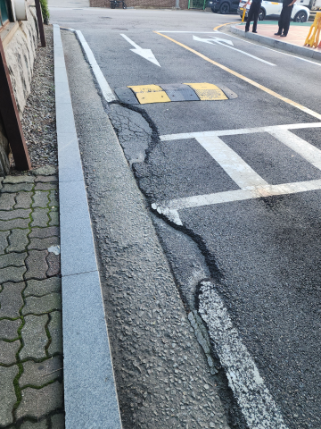

아스콘 부분보수
파손된 아스팔트의 깊이와 범위에 맞춰 부분 보수합니다.


광주시 신현동 아스콘부분보수 상담
포트홀과 균열로 불편한 노면을 필요한 구간만 보수합니다.

포트홀이나 갈라진 아스팔트는 파손된 범위와 깊이에 맞춰 보수합니다.파손 부위를 정리하고 아스콘을 채워 다지는 방식으로 필요한 구간을 보수합니다.
아스콘부분보수 시공 전·후 사진을 살펴보세요.
파손된 아스팔트의 깊이와 범위에 맞춰 부분 보수합니다.

어떤 작업을 하나요?
움푹 패인 곳은 깊이와 주변 도로 상태에 맞춰 필요한 범위를 보수합니다.
물이 스며들거나 주변까지 갈라진 곳은 파손된 범위에 맞춰 보수합니다.
손상된 아스팔트를 정리하고 새 재료를 채워 단단히 다집니다. 차량 통행 시간도 미리 협의합니다.
보수한 부분에 물이 고이지 않도록 주변 경사를 맞추고, 기존 도로와의 단차를 줄여 마감합니다.
설치·부분 교체 상담
현장 전체와 설치할 곳의 사진, 필요한 제품과 수량을 보내주세요. 설치부터 부분 교체까지 원하는 작업에 맞춰 상담해 드립니다.야간·주말 일정도 현장에 맞춰 상담합니다.
포트홀과 갈라진 노면을 필요한 만큼 보수해 주행 불편과 추가 손상을 줄입니다.
파인 도로나 갈라진 주차장 바닥은 파손 부위를 정리하고 필요한 범위만 보수할 수 있습니다.
손상된 아스콘을 제거하고 깊이와 주변 높이에 맞춰 재료를 채운 뒤 다져줍니다.
보수한 부분이 튀어나오거나 물이 고이지 않도록 주변 도로와 높이를 맞춥니다.
주차장 진입로와 통행로처럼 부분적으로 손상된 구간도 상담할 수 있습니다.
같은 지역의 다른 작업
다른 시공항목도 함께 살펴보세요.광주시 신현동 시공 안내로 이동합니다.
 볼라드같은 지역 시공 안내 보기 →
볼라드같은 지역 시공 안내 보기 → 논슬립패드같은 지역 시공 안내 보기 →
논슬립패드같은 지역 시공 안내 보기 → 반사경같은 지역 시공 안내 보기 →아스콘부분보수현재 보고 계신 시공 안내
반사경같은 지역 시공 안내 보기 →아스콘부분보수현재 보고 계신 시공 안내 주차금지봉같은 지역 시공 안내 보기 →
주차금지봉같은 지역 시공 안내 보기 → 차량진입판같은 지역 시공 안내 보기 →
차량진입판같은 지역 시공 안내 보기 → 카스토퍼같은 지역 시공 안내 보기 →
카스토퍼같은 지역 시공 안내 보기 → 코너보호대같은 지역 시공 안내 보기 →
코너보호대같은 지역 시공 안내 보기 → 차선규제봉같은 지역 시공 안내 보기 →
차선규제봉같은 지역 시공 안내 보기 → 표지판설치같은 지역 시공 안내 보기 →
표지판설치같은 지역 시공 안내 보기 →다른 지역의 설치·교체 작업도 편하게 문의해 주세요.